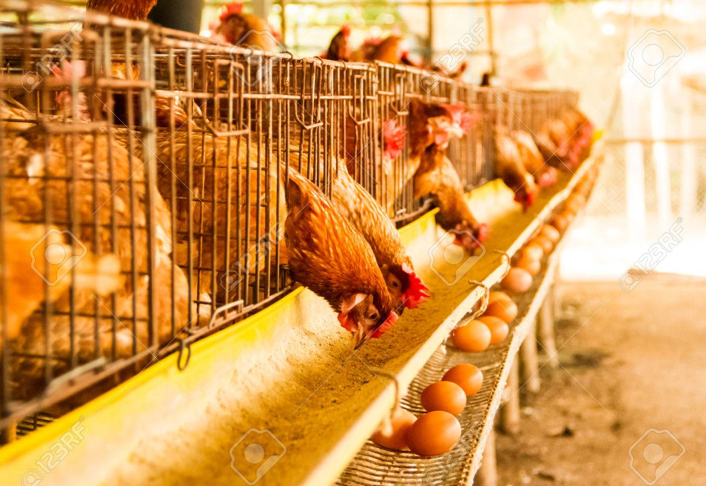
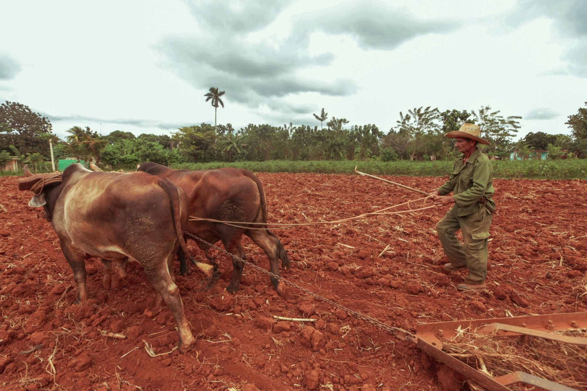
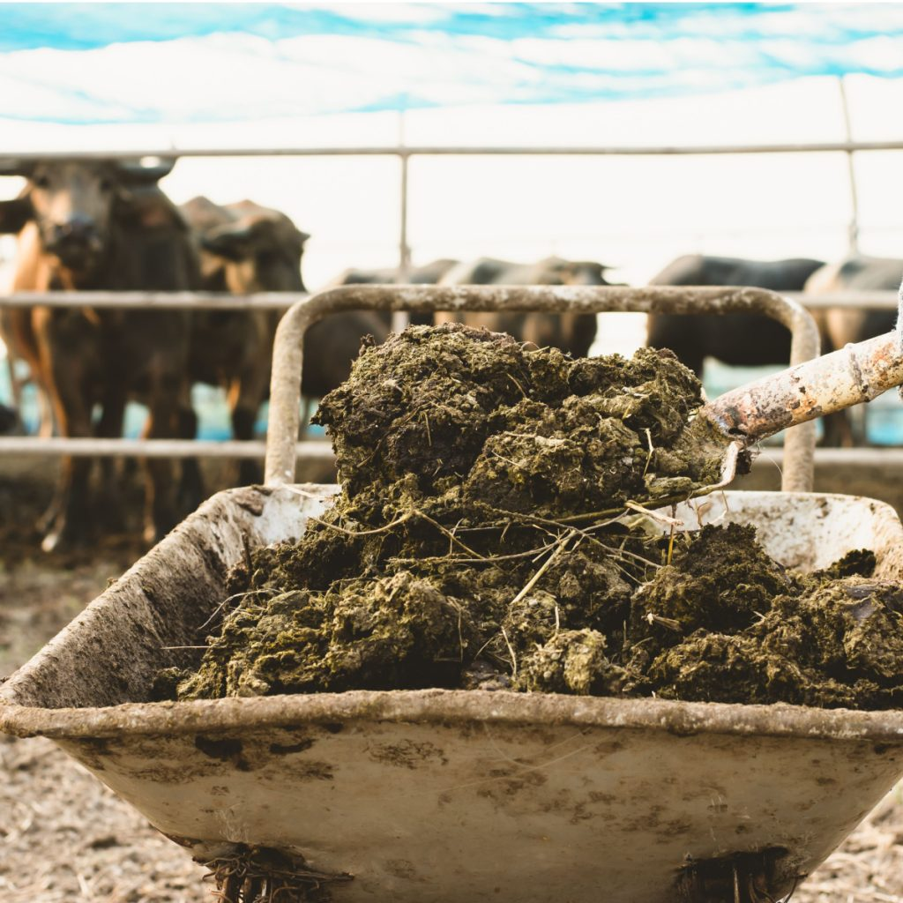
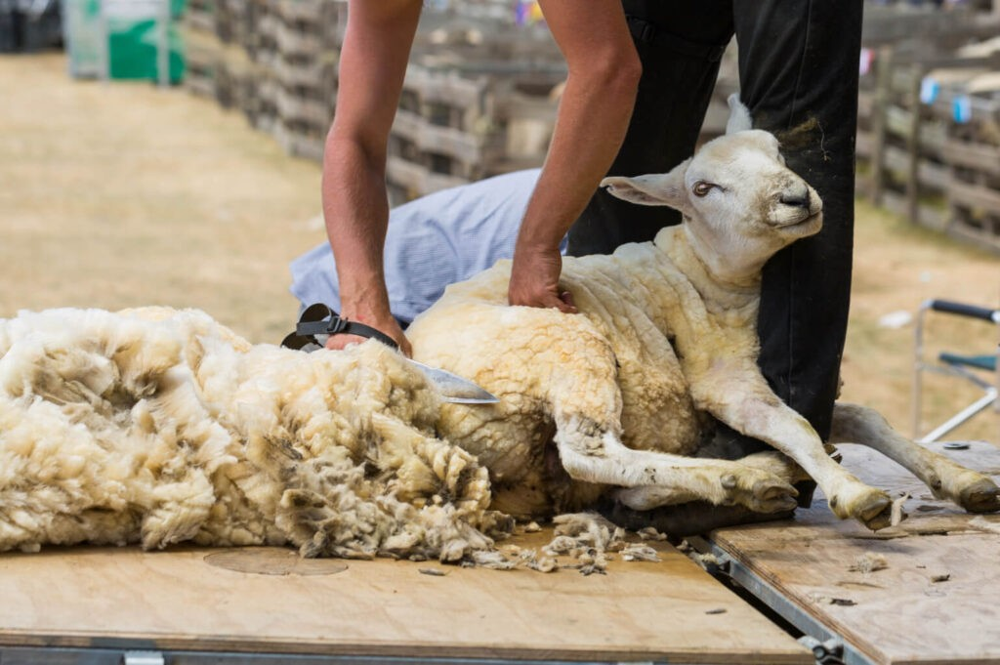

S
ECONDARY
Home
About
Forum
Contact
Go Back
USES OF FARM ANIMALS

Food production:
Farm animals such as cows, pigs, chickens, and goats are raised for meat, dairy, and egg production.

Work and transportation:
Animals like horses, oxen, and donkeys are used for plowing fields, pulling carts, and other agricultural tasks.

Fertilizer production:
Animal manure is used as a natural fertilizer to improve soil fertility.

Wool and fiber production:
Sheep and alpacas are raised for their wool, which is used to make clothing and textiles.
Companionship:
Some farm animals, such as horses and dogs, also serve as companions and provide emotional support to farmers and ranchers.
powered by Busari Abiola Sulyman